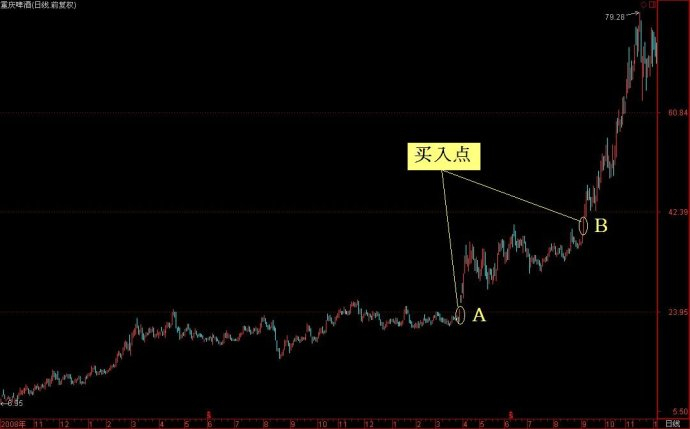

第347篇•用主升浪战法抓强势股的案例分析
——对我的第一期《投资者说》节目补充解析
谷为陵
今天晚上北京电视台财经频道《投资者说》栏目播出了我六期系列专题节目的第一期。由于每期节目只有半小时，且为了吸引电视观众，还需要留出足够的时间进行主讲嘉宾与主持人的互动，所以，每期节目所讲的内容就比较有限，为了让大家更好地理解每期的内容，我就在每期播完后，在博客中将某些重要的相关内容再深入讨论一下。
今天我要补充讲一下用主升浪战法抓强势股的几个案例，这些案例都是我亲自操作过的，我今天将这些案例拿出来给大家分析，是因为这几个案例集中体现了主升浪战法的特点和优势，我以后还会逐一详细解盘。
1、中联重科（2010.7.7）——突发性重大题材股的第一波主升浪
2010年7月7日，该股公告半年报，是每股1元，同比增长100%，即使按照当天涨停板的股价18.87元（不复权，下同）计算，折合动态市盈率为约10倍，但该股同时公告拟10送15，这应该属于重大利好。由于该股在此之前一路下跌，从2009年11月的29元跌到了2010年7月的15.66元，跌幅高达46%。在股价大跌之后，出现突发性重大利好，这是引发股价报复性反弹甚至反转的强烈信号！我很快反应出该股将就此形成一轮主升浪。果然，当天该股以涨停板开盘，且涨停板上封上了近1亿股的巨额买盘。我当时以为是买不到了，但该股开盘后，在涨停板上有持续的巨量卖盘砸盘，眼见着那近亿股买盘就被砸光了，我觉着这可是个绝佳的买入机会，就在涨停板上重仓买进了。以下是该股当时的日线图：
以下是该股当天的分时图：
当天该股成交量达到了1.2亿股，成交金额达23亿元。这么大的成交量，是谁在卖出呢？结果真是出乎意料，第二天的龙虎榜显示，前五名卖出者全部是基金，其中，持仓最多的广发系基金将5000多万股全部清仓了，卖出了整整10个亿。但事后证明，这天的涨停板就是该股新的一轮主升浪的启动点，在其后三个月内，该股股价上涨了160%！若当时广发基金不卖出，仅三个月就可以净赚16亿元。我以前就知道基金的水平不行，但通过这个案例，看到基金的操作水平如此之低，真是让人匪夷所思。
2、成飞集成（2010.8.5）——重大题材股的第二波主升浪
在2010年7月6日，成飞集成公告，大股东将注入34亿元的中航锂电资产，将使成飞集成成为中国最大的锂电池生产商之一。当时，股市的热点正是以锂电池为核心的新能源汽车概念。在信息公告后，该股连续出现6个涨停板。由于当时我的主仓位在中联重科，就没有参与成飞集成的中6个涨停板。但是，当我看到该股在连续6个涨停板后，股价虽然进入横盘状态，但回落幅度极小，且每天仍能够保持15%～20%的极高换手率，这充分说明该股还将有继续上涨的潜力。按照我的主升浪战法的模式，我预计该股将会出现平台突破，走出第二波主升浪，而在平台向上突破的那天，就是很好的买点。最终，我就在下图的8月5日那天，该股向上突破时买进了。以下是当时该股的日线图：
以下是该股当天的分时图：
3、重庆啤酒（2010.3.26、2010.9.3）——重大题材股的第二、三波主升浪
重庆啤酒是我的一个非常成功的操作案例。我自2005年就开始关注该股的乙肝疫苗的题材。自2009年2月至2010年3月，该股在23元附近（不复权）横盘整整一年。期间，大成基金重仓买入，这是一个正面消息。面对该股的长期高位平台，我的看法是，由于该股的乙肝疫苗的临床试验期还很长，在短期内不可能得出确定性的临床结果。但是，很重要的一点是，只要该疫苗没有传出什么负面的信息，那么，留给市场的就是利好的想象。这是一个很典型的博弈，博弈的结果就是，只要该股股价形成向上突破，那么，就可以看成是有利好信息，股价就会形成第二波主升浪，就可以追涨买入。于是，我就在等待向上突破的那一天的到来。在2010年3月26日，该股股价在开盘后突然开始放量拉升，这是一个以前从没有过的异常情况，待到股价上涨到4%的时候，我没再犹豫，就一路追涨直至当天涨停板为止。其后，该股在2010年9月2日又出现了类似的一个向上突破买点，我再次追涨买入。以下是该股当时的日线图：

以下是分别是该股那两个交易日买点A和买点B的分时图：
（1）买点A分时图：
（2）买点B分时图：
4、中航投资（2012.12.14—24）——比价关系股
我之所以买中航投资，主要是因为比价关系。当时国海证券大涨，股价几乎翻倍，但中航投资的质地要比国海证券好，但国海证券的总市值已经高于中航投资30%，我就在博客中预言中航投资将会补涨，涨幅至少在30%。结果呢？中航投资是一气从11元涨到了19元，涨幅达到了70%！以下是中航投资的买点示意图：
以下是中航投资与国海证券的股价走势叠加图：
5、广州浪奇（2012.12.21-31）——隐蔽资产股
2012年12月17日，媒体公开报道因广州开始兴建广州国际金融中心，广州浪奇坐落在天河区的12万平米厂房将会巨幅升值，广州浪奇将获得30～60亿元的巨额土地补偿金。当时该股股价为5.3元，若按照30～60亿元补偿金计算，广州浪奇折合每股可获补偿金7～14元，远远高于其5.3元的股价。我认为以5.3元买入广州浪奇，将是完全无风险的，且在一年内的收益将达到40%～100%！这应该是一个高确定性的投资机会，于是我在博客中推荐了该股，我也在5.3元附近买入了。以下是该股的日线图：
由以上案例可以看出，用主升浪战法抓的强势股，都是基本面、市场面、技术面结合得非常好的强势股类型，操作的确定性很高。当然，要达到我这样的操作境界，是需要对于主升浪战法进行深入研究，且长期实践的。这其中的学问还是不少的。后面还有我5期的《投资者说》专题节目，希望大家能够认真看，在看完后，再结合我在博客中的补充解析，就可更快的领会主升浪战法的精髓了。